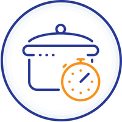
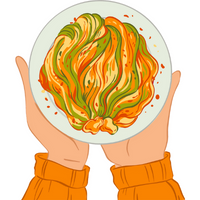

Shrimp Pasta
Ingredients:
- 3/4 lb fettuccini pasta
- 1 lb large raw shrimp, peeled and deveined (21-25 ct)
- 1 Tbsp olive oil
- 1/2 onion, (medium), finely chopped
- 2 Tbsp unsalted butter
- 1 garlic clove, minced
- 1/3 cup white wine, I used Chardonnay
- 2 cups whipping cream
- 1/3 cup shredded parmesan cheese
- 1/2 tsp Sea salt, or to taste
- 1/4 tsp black pepper, or to taste
- 1/4 tsp paprika, or to taste
- 1 Tbsp Parsley, finely chopped, to garnish
Prep Time:
10 mins

Cook Time:
15 mins
Total Time:
25 mins
